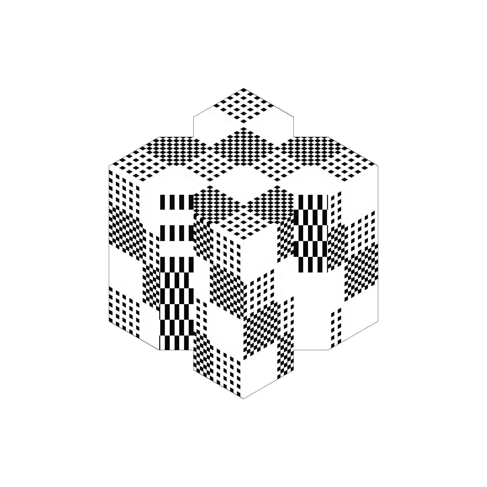

visual/3d/object/breakwaters
these breakwater objects are the result of a collaboration with caleb woodward, as we were both inspired by the artificial structures used in coastal management. the breakwaters can be purchased as LINE stickers here.
2020.08 breakwater stickers
models by caleb woodward, textures by osa uveine

2020.08 antifer, kolos, & trilong
personal favorites



about | contact | source